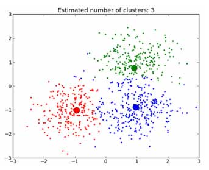

K-Means Clustering¶
**Pengertian K-Means Clustering **¶
K-Means Clustering adalah metode unsupervised learning. Yang dimana, digunakan pada data yang tidak memiliki label. Tujuan dari metode unsupervised learning salah satunya adalah melakukan clustering. Yaitu mengelompokkan data-data dengan karakter mirip.
Untuk melakukan clustering Anda perlu algoritma yang mendukung untuk pengimplementasian dari metode tersebut, salah satunya K-means. Tujuan dari k-means sendiri membagi suatu data dalam beberapa cluster (kelompok) sebanyak k, yang dimana jumlah k-nya ditentukan oleh Anda dan diwakili oleh Mean (Rata-rata). Mean dari setiap cluster di asumsikan sebagai ringkasan yang baik dari setiap observasi dari cluster tersebut.
Dan, pada K-Means Clustering memiliki dua jenis data clustering yang sering dipergunakan dalam proses pengelompokan data yaitu Hierarchical dan Non-Hierarchical. Dan K-Means merupakan salah satu metode data clustering non-hierarchical atau Partitional Clustering.
Metode K-Means Clustering berusaha mengelompokkan data yang ada ke dalam beberapa kelompok, dimana data dalam satu kelompok mempunyai karakteristik yang sama satu sama lainnya dan mempunyai karakteristik yang berbeda dengan data yang ada di dalam kelompok yang lain.

Dengan kata lain, metode K-Means Clustering bertujuan untuk meminimalisasikan objective function yang diset dalam proses clustering dengan cara meminimalkan variasi antar data yang ada di dalam suatu cluster dan memaksimalkan variasi dengan data yang ada di cluster lainnya.

Karakteristik K-Mean¶
- K-means sangat cepat dalam proses clustering.
- K-means sangat sensitive pada pembangkitan centroid awal secara random.
- Memungkinkan suatu cluster tidak mempunyai anggota.
- Hasil clustering dengan K-means bersifat unik (selalu berubah-ubah, terkadang baik, terkadang jelek).
Kelebihan dan Kekurangan K-Means¶
- Kelebihan
- Menggunakan prinsip yang sederhana, dapat dijelaskan dalam non-statistik
- Sangat fleksibel, dapat dengan mudah di adaptasi.
- Sangat umum digunakan
- Waktu yang dibutuhkan untuk menjalankan nya relatif cepat
- Kekurangan
- Karena menggunakan k buah acak, tidak di jamin untuk menemukan kumpulan cluster yang optimal.
- Tidak optimal digunakan untuk data yang jumlahnya terlalu banyak sampai bermiliyar.
- Dapat terjadinya curse of dimensionality, apabila jarak antara cluster yang satu dengan yang lain memiliki banyak dimesi.
IMPLEMENTASI PROGAM K - MEANS CLUSTERING¶
Di sini, untuk pengimplementasian program saya menggunakan data berupa diabetes datasets. Selain data, pengimplementasian membutuhkan software untuk melakukan, pengcodingan program dan di sini saya menggunakan software spyder yang terkoneksi di dalam software anaconda. Alasan saya memilih software spyder, karena pada software spyder yang berada di dalam anaconda, librarynya telah terinstall semua. Tidak seperti pycharm yang harus menginstall librarynya secara manual terlebih dahulu.
- ANACONDA¶

- SPYDER¶

"LANGKAH - LANGKAH CODING"
- Pertama
Lakukan pengimportan library dari python seperti :
- Numpy -> Untuk operasi vektor dan matriks
- Pandas -> Untuk memuat sebuah file ke dalam tabel virtual seperti spreadsheet.
- Matpolib -> Untuk menyajikan visualisasi data cluster
- Sklearn -> Untuk mengimport library data science
import numpy as np
import matplotlib.pyplot as plt
import pandas as pd
from sklearn.cluster import KMeans - Kedua
dataset = pd.read_csv('diabetes.csv')
x = dataset.iloc[:, [1, 2, 3, 4]].values
wcss = []Penjelasan :
Coding di atas berfungsing untuk memanggil datasests diabetes. Dan juga untuk memilih baris dan kolom berdasarkan nomer, sesuai urutan bingkai datanya. Dan coding baris terakhir berfungsi untuk memaksimalkan jarak cluster.
- Ketiga
for i in range(1, 11):
kmeans = KMeans(n_clusters = i, init = 'k-means++', max_iter = 300, n_init = 10, random_state = 0)
kmeans.fit(x)
wcss.append(kmeans.inertia_)
#Plotting the results onto a line graph, allowing us to observe 'The elbow'
plt.plot(range(1, 11), wcss)
plt.title('The elbow method')
plt.xlabel('Number of clusters')
plt.ylabel('WCSS') #within cluster sum of squares
plt.show()
kmeans = KMeans(n_clusters = 3, init = 'k-means++', max_iter = 300, n_init = 10, random_state = 0)
y_kmeans = kmeans.fit_predict(x)
plt.scatter(x[y_kmeans == 0, 0], x[y_kmeans == 0, 1], s = 100, c = 'red', label = 'tested_positive')
plt.scatter(x[y_kmeans == 1, 0], x[y_kmeans == 1, 1], s = 100, c = 'blue', label = 'tested_negative')
#Plotting the centroids of the clusters
plt.scatter(kmeans.cluster_centers_[:, 0], kmeans.cluster_centers_[:,1], s = 100, c = 'yellow', label = 'Centroids')
plt.legend()Penjelasan :
Coding di atas, berfungsi untuk mengeksekusi dataset yang telah di panggil ke dalam program. Yang nantinya data itu, di kelompokkan masing - masing oleh program sesuai dengan inputan class masing - masing, antara tested positive atau tested negative. Dan untuk membedakan pengelompokkan antara class tested positive dan tested negative, mereka di berikan warna berbeda. Yaitu warna merah untuk tested positive sedangkan warna biru untuk tested negative. Sedangkan warna kuning berfungsi, untuk menampilkan pengelompokkan centroids dari seluruh data. Dan di dalam codingan di atas juga terdapat, coding yang berfungsi menampilkan elbow method. Elbow method berfungsi, membantu menemukan jumlah cluster yang tepat dalam dataset.
- Output Program -